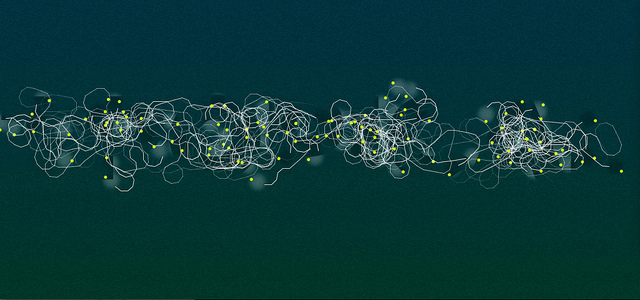
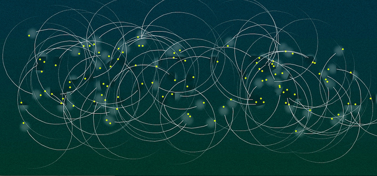
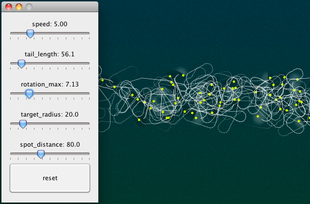
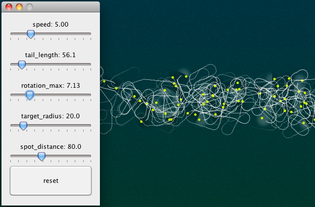

Luciérnagas es el resultado de un ejercicio de experimentación con animación interactiva.
El código fuente está disponible en github.

Ruby/Processing permitió crear una interface nativa para controlar en tiempo real variables de velocidad, longitud de partícula, ángulo de curva, etc.
 
